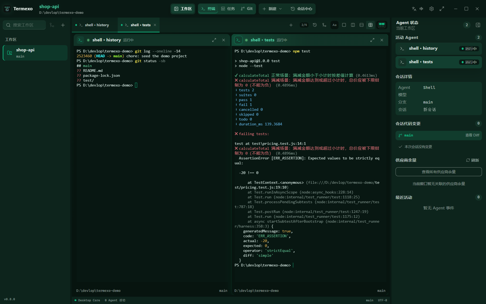
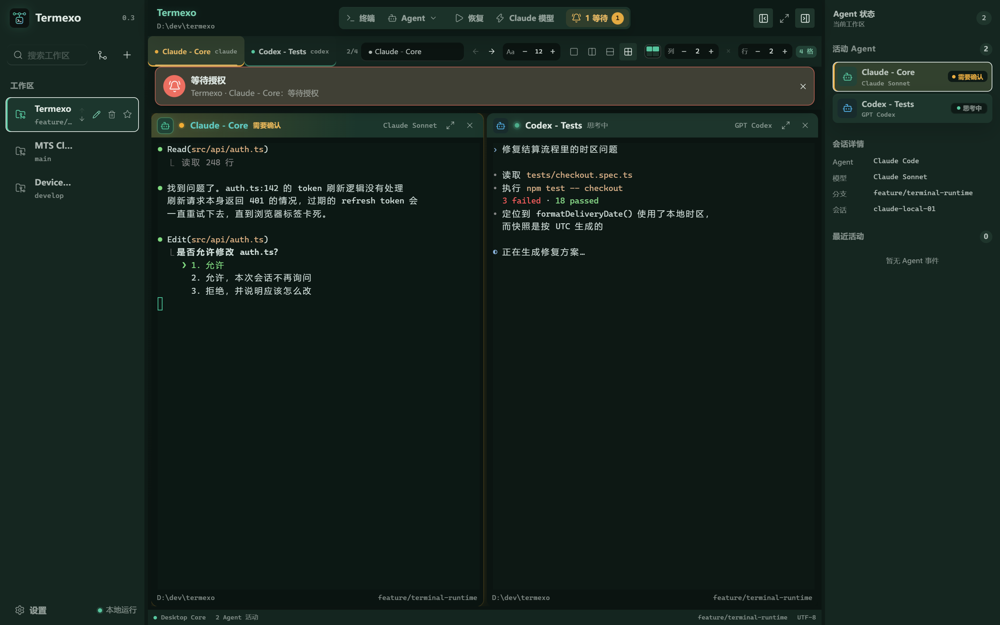
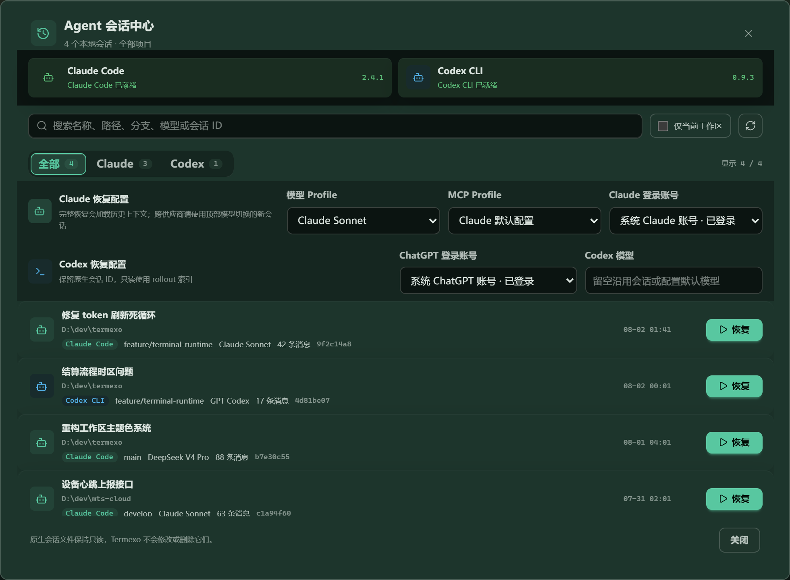
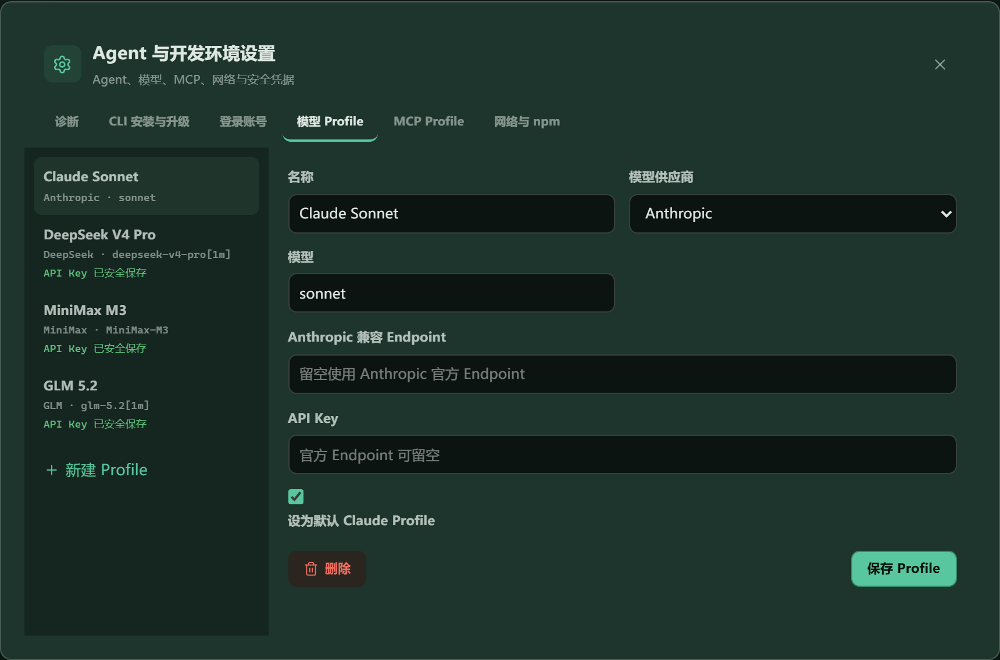

Every session stays alive in a tab. Show the ones you are watching right now.
Runs on your machine · Windows · No account needed
One window. Every agent.
Claude Code in one terminal, Codex in another, and three more you have stopped keeping track of. Termexo puts them all on one screen — you can see which one is waiting on you, pick up yesterday's conversation, and switch models without restarting anything.
PS
npx termexo@latest

Claude Code 1
Codex CLI 2
Shell 3
Claude Code 1Claude Sonnet
$ termexo agent status ● session running ● model claude-sonnet ● workspace MTS Cloud ◐ context restorable agent main >
Desktop Core7 agents activemain
Claude CodeCodex CLIMulti-accountDeepSeekMiniMaxGLMMCPNative PTY
01 / WORKBENCH
Four agents. One screen.
Open as many terminals as you like, then choose which ones stay visible and arrange them in a grid that fits how you work. Switch to another project and back, and everything is exactly where you left it.
Claude Code + Codex CLI
2 × 2 grid · 3 projects open

Anything from 1 to 6 rows and columns. Each project remembers its own layout.
Same Claude Code you already know, pointed at a different provider.
Your projects and API keys stay on your computer. Termexo has no cloud to log into.
02 / NEVER MISS ONE
It tells you when an agent is stuck.
An agent sitting on an approval prompt helps nobody if you are looking at a different window. Termexo flashes the taskbar, sends a system notification, and keeps a banner on screen until you deal with it — for every project you have open, not just the one in front of you.
- Waiting for approval, waiting for input, and finished all look different at a glance
- Works even when the Termexo window is already focused
- Click the banner to jump straight to that terminal


03 / NOTHING IS LOST
Pick up yesterday's conversation.
Claude Code and Codex already save your sessions on disk. Termexo simply lists them so you can search and reopen one — it calls the CLI's own resume, so the full context comes back. Nothing you close is really lost.
- Search across every project by name, path, branch, or model
- Resumes through the real `claude --resume` and `codex resume`
- Your session files are read-only — Termexo never edits or deletes them
04 / MODEL ROUTING
Same CLI. Different model.
Keep using Claude Code, but point it at DeepSeek, MiniMax, GLM, or your own compatible gateway. Save each one as a profile and switch between them in two clicks — no reinstalling, no editing config files by hand.
- Anthropic, DeepSeek, MiniMax, GLM, or any compatible endpoint
- API keys go into Windows Credential Manager, never a plain text file
- Switch every Claude terminal in a project at once

05 / FEATURES
The things you keep doing by hand.
Most of the friction with coding agents is not the model. It is remembering which terminal was doing what, and setting it all up again tomorrow.
Close it. Reopen it. Still there.
Project folder, grid layout, which terminals were open, what model each was running, even the colour you picked — it all comes back with the workspace.
Nothing you close is lost
Find any past Claude Code, Codex, or OpenCode session across your projects and reopen it with its full history intact.
claude --resume · codex resume · opencode --session
Hand a task to an agent
Write down the task and what counts as done, pick an agent, and it opens as a real terminal that reports its own progress back to the board.
Try a cheaper model on the same task
Point the same CLI at a different provider, switch back if the result is worse, and keep every key in secure storage.
Claude CoreRUNNING
Claude ReviewWAITING APPROVAL
Codex TestsTHINKING
Know the moment it needs you
Waiting, thinking, needs approval, done, failed — shown in the tab, the panel, and the taskbar, across every project at once.
Works in your language
Follow Windows automatically or switch between Chinese, English, Spanish, French, German, Japanese, and Korean at any time.
See your quota before you burn it
Check how much of your plan is left and when it resets, before you decide which model to send the next task to.
Approve it from your phone
Step away from the desk and still let an agent through the approval it is waiting on, over an encrypted link to your own machine.
06 / ROADMAP
What comes next.
Everything above already works. Here is what has shipped, and what is being built next — anything still marked planned is not being sold as finished.
V0.3SHIPPED
Run several agents side by side
Claude and Codex detection, separate logins, resume, custom grids, model profiles, seven interface languages, and everything saved locally.
V0.4SHIPPED
Accounts, installs, and networks
Install or upgrade the CLIs in one click, keep several logins apart, set up proxies for a company network, and watch how much plan quota is left.
V0.5–0.6YOU ARE HERE
Handing work between agents
Session summaries, moving a task from one agent to another, routing work, and notifications.
V0.7PLANNED
Reaching your desk from anywhere
Paired devices, encrypted remote terminals, approving from a phone, clear roles, and an audit trail.
07 / PRIVACY
It all stays on your computer.
Termexo has no account, no server, and nothing to sync. Later versions add remote access — but only the kind you switch on yourself and can switch off just as fast.
Local by default
Your project paths, sessions, terminal state, and settings sit in a file on your disk. There is no cloud service to sign into.
Your API keys are not in a config files
Keys go into Windows Credential Manager. The app stores only a reference, and the interface can tell you a key exists but never show it back.
Your agent files are read-only
Termexo reads what Claude Code and Codex write, and uses their own resume commands. It never rewrites, renames, or deletes your session history.
BUILD WITH US
One command. No account.
The npm package ships the whole Windows app. Run it, and if you do not like it, delete it — nothing was created anywhere else.